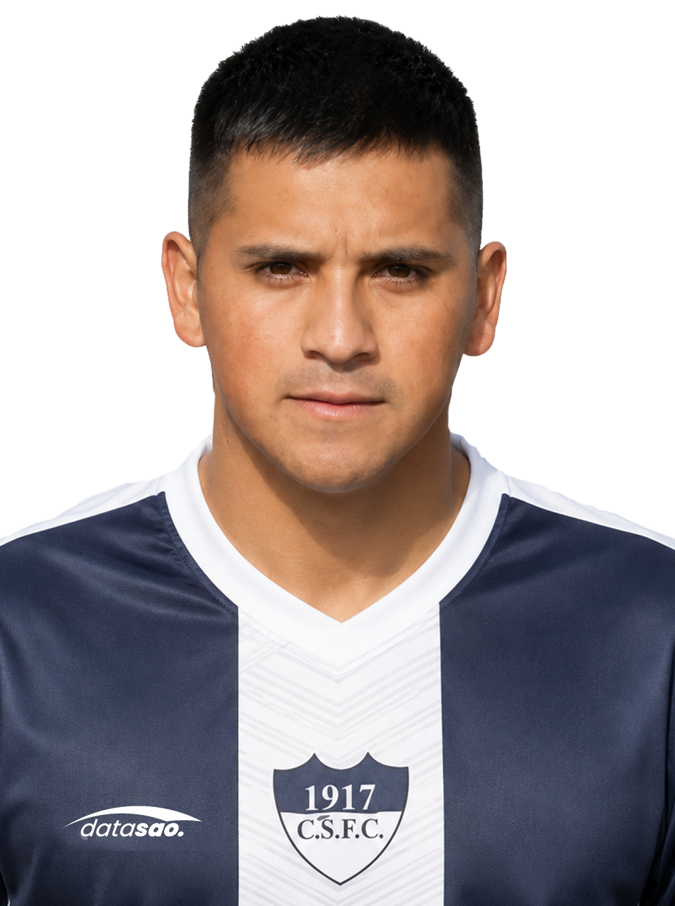

Tomás Bouzas
Talleres · Arquero

FÚTBOL REGIONAL · PARTIDO DE VUELTA
El próximo fin de semana, Talleres y Ferro vuelven a enfrentarse. ¿Quién creés que será el jugador del partido?


El próximo fin de semana se jugará el partido de vuelta.
Talleres llega con ventaja después de ganar el partido de ida por 1 a 0 .
VOTACIÓN DATA SAO
Talleres · Arquero
Talleres · Mediocampista
Talleres · Mediocampista · Capitán
⚽ Autor del gol en el partido de idaFerro · Arquero
Ferro · Mediocampista

Ferro · Delantero
Si el jugador que buscás no aparece en la lista, podés escribir su nombre y votar por él.
DATA SAO propone esta votación para conocer la opinión de los hinchas y seguidores del fútbol regional.
La elección es independiente y representa exclusivamente la opinión de quienes participan de la votación.